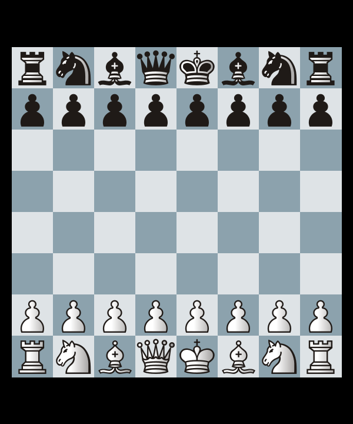

gif_maker module¶
-
class
gif_maker.Gifmaker(pgn_file_path: str, **kwargs: dict)¶ Bases:
objectClass for converting a chess
PGNfile to aGIF.- Parameters
pgn_file_path (str) – Path to the source PGN file to be convereted to GIF.
- Other Parameters
colors (tuple, optional) – colors for white and black squares.. Default
( '#9e3725','#ffe0b3' ).piece_theme (str, optional) – Choose one of the available piece_themes. Default
merida.side (int, optional) – Size of the side of a single chess-square in pixels. Default
70.h_margin (int, optional) – Black horizontal margin around the chess_board to be rendered in the GIF. Default
0.v_margin (int, optional) – Black vertical margin around the chess_board to be rendered in the GIF. Default
0.
Example
>>> import Gifmaker >>> obj = Gifmaker('game.pgn') >>> obj.make_gif('chess_game.gif)
chess_game.gifwill be created in the current working directory.The resolution of the images is adjustable by changing the side keyword argument.Note
Following are the available piece-themes:
{ ‘alpha’, ‘california’ , ‘cardinal’ , ‘cburnett’ , ‘chess7’ , ‘chessnut’ , ‘companion’ , ‘dubrovny’ , ‘fantasy’ , ‘fresca’ , ‘gioco’ , ‘icpieces’ , ‘kosal’ , ‘leipzig’ , ‘letter’ , ‘libra’ , ‘maestro’ , ‘merida’ , ‘mono’ , ‘pirouetti’ , ‘pixel’ , ‘reillycraig’ , ‘riohacha’ , ‘shapes’ , ‘spatial’ , ‘staunty’ , ‘tatiana’ }.
These are the publicly available themes taken from lichess.org’s amazing repository-lila .
-
blue_white= ('#dee3e6', '#8ca2ad')¶
-
brown_off_white= ('#f0d9b5', '#b58863')¶
-
make_gif(gif_file_path: str = 'chess.gif')¶ Makes the gif of the loaded pgn at the specified destination file path.
- Parameters
gif_file_path (str) – Destination directory to store the gif file.
-
yellow_green= ('#ffffdd', '#86a666')¶